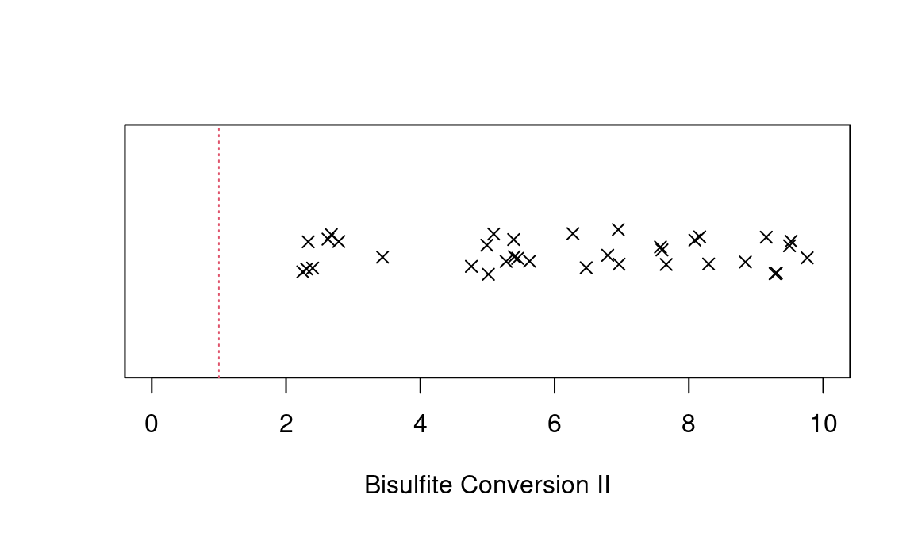

Recommended Work Flow
Jonathan Heiss
2019-04-22
exemplary_ewas.RmdThis vignette exemplifies how to use the ewastools package to clean and pre-process DNA methylation data. After loading the required packages, analysis would start with gathering the phenotype data. In this example using a public dataset from the Gene Expression Omnibus repository, the phenotype data is stored in a file named pheno.csv
devtools::install_github("hhhh5/ewastools@master")
library(ewastools)
library(stringi)
library(data.table)
library(magrittr)
library(purrr)
library(svd)pheno = fread("pheno.csv")
head(pheno)
## gsm sex smoker
## 1: GSM2260480 m smoker
## 2: GSM2260482 m smoker
## 3: GSM2260485 m smoker
## 4: GSM2260486 m smoker
## 5: GSM2260487 f smoker
## 6: GSM2260488 m smokerpheno contains a column gsm, which in this case represents also the prefix of the .idat file names. Usually, however, the file names are a combination of the Sentrix barcode, Sentrix position and color channel and will look something like this 200379120004_R01C01_Red.idat for the .idat containing the red color channel, and analogously 200379120004_R01C01_Grn.idat for the .idat containing the green color channel. read_idats can be used to import methylation data. It’s first argument is a character vector containing the absolute or relative file paths and names but without the color channel and file extension, e.g. C:/folder/subfolder/200379120004_R01C01. Both red and green .idat files of a particular sample need to be in the same folder.
meth = read_idats(pheno$gsm,quiet=TRUE) # `quiet=TRUE` supresses the progress bar
## [1] 622399The entire pre-processing, including filtering by detection p-values, dye-bias correction and conversion into beta-values, can be done in one line …
beta = meth %>% detectionP %>% mask(0.01) %>% correct_dye_bias %>% dont_normalize… but we will break it up in order to describe the various steps.
The first step should be to filter out unreliable data points which result from low fluorescence intensities. These can be the result of insufficiently amplified DNA. Filtering is done using so-called detection p-values, calculated from comparing fluorescence intensities to a noise distribution. Probes below a chosen significance threshold are deemed detected, otherwise undetected. The conventional way of calculating these p-values, as implemented in the GenomeStudio software, lets many unreliable data points pass, demonstrated by the fact that many probes targeting the Y chromosome are classified as detected. ewastools implements an improved estimation of noise levels that improves accuracy.
meth %<>% detectionP
P.new = meth$detPFor easy comparison a function detectionP.neg() is provided, which estimates background the conventional way.
P.neg = meth %>% detectionP.neg %$% detPWe can see the improved accuracy by counting the number of Y chromosome probes that are called detected for a male and a female samples.
chrY = meth$manifest[chr=='Y',index]
male = which(pheno$sex=="m")[1]
female = which(pheno$sex=="f")[1]
P.neg = P.neg[chrY,c(male,female)]
P.new = P.new[chrY,c(male,female)]
P.neg = colSums(P.neg<0.01,na.rm=TRUE)
P.new = colSums(P.new<0.01,na.rm=TRUE)
names(P.neg) = c("male","female")
names(P.new) = c("male","female")Using the conventional detection p-value, for the female sample 402 Y chromosome probes are called detected, a number close to all 416 Y chromosome probes as for the male sample.
P.neg
## male female
## 416 402Using the improved method gives a much more accurate result with all 416 Y chromosome probes classified as detected for the male sample, but only 402 probes classified as detected for the female sample. More information can be found in Heiss and Just, 2019.
P.new
## male female
## 416 73We used a significance threshold of 0.01 above. Moving forward, probes above this threshold should be masked, i.e. set to missing.
meth %<>% mask(0.01)Infinium BeadChips use two fluorescent dyes that are linked to the nucleotides used in the the single-base extension step. A and T nucleotides use are linked with a red dye (the red color channel), G and C nucleotides are linked with a green dye (green color channel). Uncorrected data usually feature higher intensities in the red color channel, the so-called dye bias. For probes of Infinium type II design, which use separate color channels to measure the methylated and unmethylated signal, this results in a shifted distribution of beta-values. (Probes of Infinium design type I are not affected, as they measure both signals in the same color channel.) Dye-bias correction normalizes the red and green color channel. ewastools provides an improved version of RELIC (Xu et al., 2017) using robust Theil-Sen estimators.
meth %<>% correct_dye_biasThe final step is the conversion of intensities to beta-values. While ewastools implements the LOESS normalization (Heiss and Brenner, 2015), I advise against normalization as it does little to protect against batch effects but can result in the removal of genuine biological signal. Instead I recommended to adjust for relevant technical covariates in regression models later.
beta = dont_normalize(meth)Before beginning with the actual epigenome-wide association study, it is advised to check a dataset for problematic samples.
Quality checks
Control metrics
The first quality check evaluates 17 control metrics which are describe in the BeadArray Controls Reporter Software Guide from Illumina. Exemplary, the “Bisulfite Conversion II” metric is plotted below. Three samples fall below the Illumina-recommended cut-off of 1. Input for control_metrics() is the output of read_idats(), e.g. the object holding raw or dye-bias-corrected intensities.
ctrls = control_metrics(meth)
stripchart(ctrls$`Bisulfite Conversion II`,method="jitter",pch=4,xlab='Bisulfite Conversion II',xlim=c(0,10))
abline(v=1,col=2,lty=3)
A logical vector of passed/failed is returned by sample_failure() which compares all 17 metrics against the thresholds recommended by Illumina. In this case all samples passed (i.e., failed==FALSE).
pheno$failed = sample_failure(ctrls)
table(pheno$failed)
##
## FALSE
## 35Sex mismatches
The sex of the sample donor can reliable be inferred from the methylation data. This functionality is implemented by the combination of check_sex() and predict_sex(). check_sex() computes the normalized average total fluorescence intensities of the probes targeting the X and Y chromosome. predict_sex() uses the output of check_sex() and recorded sex in order to identify mislabeled samples. The function check_sex() should be applied to dye-bias corrected intensities.
Plotted below are the normalized average total fluorescence intensities of X and Y chromosome probes.
pheno[,c("X","Y") := check_sex(meth)]
pheno[,predicted_sex:=predict_sex(X,Y,which(sex=="m"),which(sex=="f"))]
tmp = pheno[predicted_sex==sex]
plot(Y ~ X,data=tmp,pch=ifelse(tmp$sex=="f",1,4),asp=1,xlab="Normalized X chromosome intensities",ylab="Normalized Y chromosome intensities")
tmp = pheno[predicted_sex!=sex]
points(Y ~ X,data=tmp,pch=ifelse(tmp$sex=="f",1,4),col=2)
legend("topright",pch=c(1,4),legend=c("female","male"))
Samples form two cluster of males (top left) and females (bottom left). The one mislabeled sample here (in red) can easily be identified and should be flagged.
pheno[sex!=predicted_sex,exclude:=TRUE] # flag sample
pheno[sex!=predicted_sex,.(gsm,sex,predicted_sex)]
## gsm sex predicted_sex
## 1: GSM2260573 f mAnother sample falls outside the two clusters.
pheno[X %between% c(0.85,0.95) & Y %between% c(0.65,0.75),.(gsm,X,Y,sex,predicted_sex)]
## gsm X Y sex predicted_sex
## 1: GSM2260653 0.9172741 0.710014 m mThere are several possible explanations for samples not clustering with males or females, for example chromosome abnormalities. Or sample contamination. The latter theory can be tested in the next quality check.
Genotype calling and outliers
For the next check we first need the row indexes of the SNP probes in beta. meth, the output of read_idats(), contains a data.table object with the relevant information.
meth$manifest
## probe_id addressU addressM channel next_base chr mapinfo strand
## 1: rs10796216 14622465 41635319 Red A NA
## 2: rs715359 18796328 48710462 Grn C NA
## 3: rs1040870 22687484 20663453 Red A NA
## 4: rs10936224 34619331 30630453 Red T NA
## 5: rs213028 10622451 24684377 Red T NA
## ---
## 485573: cg17939569 73757458 NA Both Y 27009430 F
## 485574: cg13365400 61745505 NA Both Y 27210334 F
## 485575: cg21106100 56793430 NA Both Y 28555536 R
## 485576: cg08265308 67794346 26610401 Red A Y 28555550 R
## 485577: cg14273923 16749405 NA Both Y 28555912 F
## probe_type index OOBi Ui Mi
## 1: rs 1 1 39329 302627
## 2: rs 2 1 86374 372482
## 3: rs 3 2 120242 99780
## 4: rs 4 3 233473 195590
## 5: rs 5 4 1025 139183
## ---
## 485573: cg 485573 NA 610683 610683
## 485574: cg 485574 NA 499079 499079
## 485575: cg 485575 NA 452652 452652
## 485576: cg 485576 89203 559764 155235
## 485577: cg 485577 NA 64742 64742SNP probes are labelled "rs".
snps = meth$manifest[probe_type=="rs",index]
snps = beta[snps,]These SNPs are then used as input for call_genotypes(). This function estimates the parameters of a mixture model consisting of three Beta distributions representing the heterozygous and the two homozygous genotypes, and a fourth component, a uniform distribution, representing outliers. The functions returns posterior probabilities used for soft classification. When setting the argument learn=FALSE, a pre-specified mixture model is used. In this case, we use the pre-specified model as the dataset is quite small and maximum likelihood estimation might be unstable.
genotypes = call_genotypes(snps,learn=FALSE)snp_outliers() returns the average log odds of belonging to the outlier component across all SNP probes. I recommend to flag samples with a score greater than -4 for exclusion.
pheno$outlier = snp_outliers(genotypes)
pheno[outlier > -4,.(gsm,X,Y,outlier)]
## gsm X Y outlier
## 1: GSM2260653 0.9172741 0.710014 -0.8460863
pheno[outlier > -4,exclude:=TRUE] # flag sampleThe one sample failing this check is the same sample that did not belong to either the male or female cluster in the plot above. This is strong evidence that this sample is indeed contaminated. While SNP outliers can also result from poorly performing assays, the sample passed the first quality check looking at the control metrics, therefore rendering this possibility unlikely. Another cause for a high outlier score is sample degradation (e.g., FFPE samples).
Other useful functions to be mentioned are check_snp_agreement() and enumerate_sample_donors(). The former checks whether the genotypes of samples supposed to come from the same donor (or from monozygotic twins) do in fact agree; the latter returns unique IDs for unique genotypes and can, for example, be used to find technical replicates in public datasets.
pheno$donor_id = enumerate_sample_donors(genotypes)
# List duplicates
pheno[,n:=.N,by=donor_id]
pheno[n>1,.(gsm,donor_id)]
## gsm donor_id
## 1: GSM2260485 3
## 2: GSM2260543 3
pheno[gsm=="GSM2260543",exclude:=TRUE] # drop duplicateHere samples GSM2260485 and GSM2260543 come from the same donor.
PCA
Principal component analysis is a popular feature reduction method: it projects high-dimensional data into a lower-dimensional representation while trying to retain as much variability as possible. This is especially useful when either individual features are highly correlated and it is therefore reasonable to summarize them, or when (sometimes subtle) traces of background effects can be found across of large number of features.
We will drop the X and Y chromosome as we would like to find important drivers of methylation beyond sex.
set.seed(982278)
chrXY = meth$manifest[chr%in%c("X","Y") & probe_type!="rs",index]
pcs = beta[-chrXY,]
pcs = pcs - rowMeans(pcs)
pcs = na.omit(pcs)
pcs = t(pcs)
pcs = trlan.svd(pcs,neig=2) # compute the first two principal components
pcs = pcs$u
pheno$pc1 = pcs[,1]
pheno$pc2 = pcs[,2]plot(pc2 ~ pc1,pch=ifelse(sex=="f",1,4),pheno,asp=1,xlab="PC #1",ylab="PC #2")
legend("topright",pch=c(1,4),legend=c("female","male"))
There is one clear outlier.
pheno[pc1< -0.8,exclude:=TRUE]
pheno[pc1< -0.8,.(gsm,pc1,pc2)]
## gsm pc1 pc2
## 1: GSM2219539 -0.9300883 -0.1484162GSM2219539 is actually a lung tissue sample from another GEO dataset (included here for educational purposes). It dominates the first principal component and should be excluded as it otherwise could drastically change the results of downstream analyses.
PCA may be applied iteratively. After excluding samples that manifest as outliers, repeating PCA can give very different principal components.
Leukocyte composition
This quality check will only apply in case of blood samples (blood is, however, one of the most commonly studied tissues). The function estimateLC() implements the Houseman method to predict the leukocyte composition. The user has the choice between various sets of model parameters trained on various reference datasets (see ?estimateLC for a list of options). The function operates on the matrix of beta-values.
LC = estimateLC(beta,ref="deGoede+Reinius")
pheno = cbind(pheno,LC)
round(head(LC),3)
## MO B CD4 CD8 GR NK nRBC
## 1: 0.048 0.007 0.025 0.087 0.821 0.020 0.000
## 2: 0.059 0.000 0.062 0.097 0.746 0.055 0.007
## 3: 0.050 0.009 0.062 0.047 0.799 0.048 0.000
## 4: 0.079 0.000 0.057 0.085 0.744 0.056 0.005
## 5: 0.079 0.004 0.093 0.074 0.727 0.040 0.011
## 6: 0.058 0.004 0.087 0.072 0.724 0.064 0.000LC contains estimated proportions for seven cell types (dependent on the chosen reference dataset).
A second foreign sample from another GEO dataset has been hidden in the dataset, consisting of a purified fraction of granulocytes. Plotting GR this sample can easily be spotted.
plot(pheno$GR*100,ylab="Granulocyte fraction (%)")
It is the third to last sample, GSM1185585.
pheno[which.max(GR),.(gsm,GR)]
## gsm GR
## 1: GSM1185585 1.009805
pheno[which.max(GR),exclude:=TRUE]The lung sample is also prominent, with an estimated proportion of GR of (not exactly because of numerical issues) zero.
pheno[which.min(GR),.(gsm,GR)]
## gsm GR
## 1: GSM2219539 0.02205263
pheno[which.min(GR),exclude:=TRUE]We drop the problematic samples
drop = pheno[exclude==TRUE,which=TRUE]
pheno = pheno[ -drop]
beta = beta [,-drop]
meth %<>% drop_samples(j=drop)EWAS
You’ve cleaned and pre-processed the data, now it is time for the actual EWAS. First it is important to correctly code the variables. smoker and sex are vectors of type character, but should be converted to factors.
pheno = pheno[,.(
gsm
,sex = factor(sex,levels=c("m","f")) # first level is the reference
,smoker = factor(smoker,levels=c("non-smoker","smoker"))
,GR,MO,B,CD4,CD8,NK,nRBC
)]We want test all CpG sites for their association with smoking. Unfortunately, the phenotype data is very sparse, as it is typcial for public datasets. Aside from smoking, only sex and the estimated proportions of the seven cell types will be including in the model. The following code snippet is optimized for readability not speed.
f = function(meth){
m = lm(meth~1+sex+smoker+GR+MO+B+CD4+CD8+NK+nRBC,data=pheno)
coef(summary(m))["smokersmoker",4] # extract the p-value for the smoking
}
f = possibly(f,otherwise=NA_real_) # catch errors
pvals = apply(beta,1,f)We create a data.table holding the p-values and information about the probes.
SMK = data.table(probe_id=rownames(beta),pval=pvals)
SMK %<>% na.omit
SMK[,qval:=p.adjust(pval,m="fdr")]
SMK = SMK[qval<0.05]
print(SMK)
## probe_id pval qval
## 1: cg21566642 1.440710e-08 0.00699044
## 2: cg01940273 1.196028e-07 0.01450806
## 3: cg05575921 4.776904e-08 0.01158896
## 4: cg21161138 7.968222e-08 0.01288748Two of the significant CpGs are known biomarkers overlapping genes (ALPPL2, AHRR) for which the association with smoking has been validated in several cohorts (Zeilinger et. al., 2013).
Final comments
Depending on the dataset, many other types of quality checks might be applicable. If you have suggestions or comments regarding ewastools, please send an email, or file an issue or submit a pull request on GitHub (https://github.com/hhhh5/ewastools).